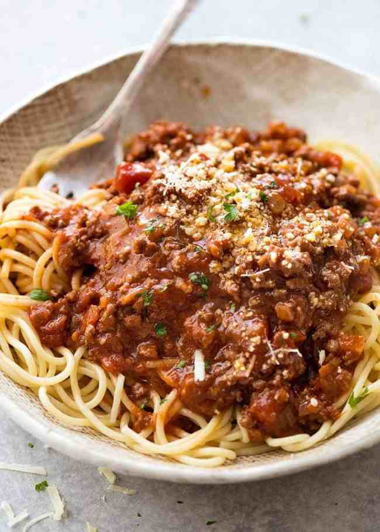

Spaghetti Bolognaise

Rich ragu sauce with minced pork and beef served with al dente spaghetti.
Beautifully colored and rich family feast, sure to be a complete winner in your household.
Ingredients:
- Olive Oil
- Spaghetti - 500g
- Minced Pork and Beef - 500g
- Large Carrot (diced)- 1
- Large Onion (diced)- 1
- Grated Parmesan Cheese - 100g
- Passata - 1 tin
- Garlic (crushed)- 3 cloves
- Beef Stock - 1 cube
- Basil (Fresh or dried) - 1tsp
Method:
- Bring a frying pan to medium heat with a splash of olive oil for frying
- Add chopped onion and fry until brown
- Add garlic and carrots to the pan
- Fry for a further minute then add the minced meat
- Brown all over and then add passata and beef stock
- Bring whole pan to a boil and let simmer
- Bring 2.5L of water to boil in a separate saucepan and add the spaghetti
- Once cooked following the package instructions, drain and serve
- Add a healthy spoonful of bolognaise mixture ontop of the pasta to serve
- Garnish with grated parmesan and enjoy!
HOME